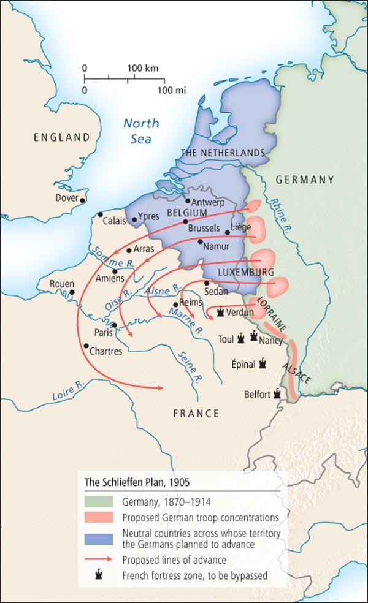
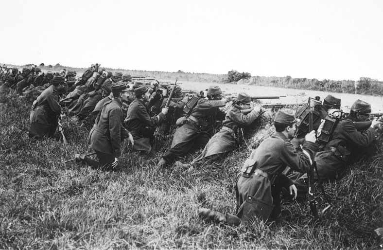

 With Austria-Hungary declaring war on Serbia, it was inevitable that Russia would declare war on Austria-Hungary. Germany had to defend its ally, but feared that the other Entente powers would declare war on Germany. The German military was planning for this possibility, where based on their previous war with France, they planned for a two front war. Germany would flank through Belgium and Luxembourg to take out France within six weeks. During that six weeks’ time Russian forces would mobilize and be ready to fight Germany on the eastern side. This plan was called the Schlieffen Plan. A point in this plan was to avoid sieging Paris as it took months in the Franco-Prussian War, but instead eliminate the French military to win the war in France.
This plan would fail for multiple reasons. First off, the Russian mobilized in 10 days versus six months. The Belgians defended their land instead of letting Germany walk through, which caused Britain to declare war on Germany. Due to the lack of rapid movement, Germany was unable to take France over it six months. The German forces had great success in the Battle of the Frontiers, and were able to make progress towards Paris, but the joint forces of Britain and France would hold the line at the Battle of the Marne.